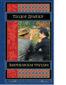

Роман "Американская трагедия" - вершина творчества выдающегося американского писателя Теодора Драйзера. Он говорил: "Никто не создает трагедий - их создает жизнь. Писатели лишь изображают их". Драйзеру удалось так талантливо изобразить трагедию Клайда Грифитса, что его история не оставляет равнодушным и современного читателя. Молодой человек, вкусивший всю прелесть жизни богатых, так жаждет утвердиться в их обществе, что идет ради этого на преступление.